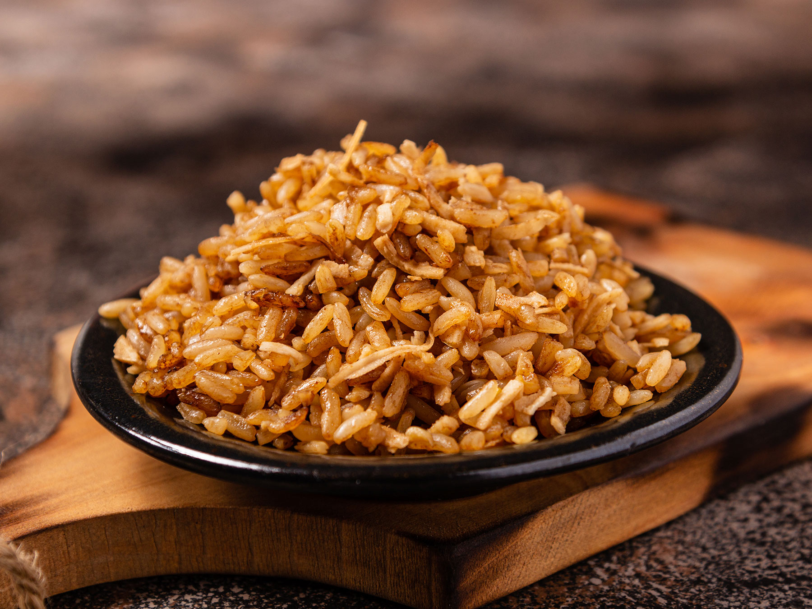

Arroz De Coco
El arroz de coco es un plato que se prepara incorporando leche de coco al arroz durante su coccion, lo que le confiere un sabor distintivo y una textura cremosa. Es un plato comun en varias cocinas del mundo, especialmente en regiones donde el coco es un ingrediente abundante. La receta basica implica cocinar el arroz en una mezcla de agua y leche de coco en lugar de solo agua. Dependiendo de la receta especifica y de la region, tambien se pueden agregar otros ingredientes como sal, azucar o incluso trozos de coco rallado para realzar el sabor. El arroz de coco es popular en muchas culturas, especialmente en areas donde el coco es un ingrediente tradicional. Puede servirse como acompanamiento para platos salados, como curry, pescado o pollo, o bien, endulzarse y servirse como postre. La preparacion y los sabores pueden variar segun la region y las preferencias culinarias locales.
